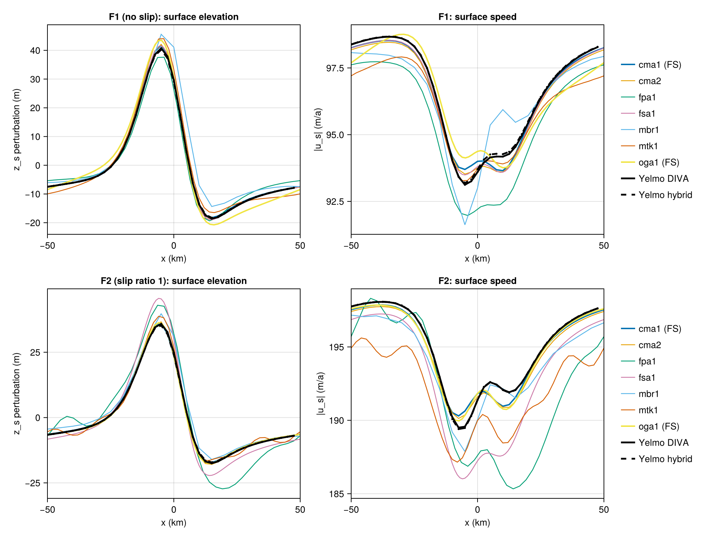
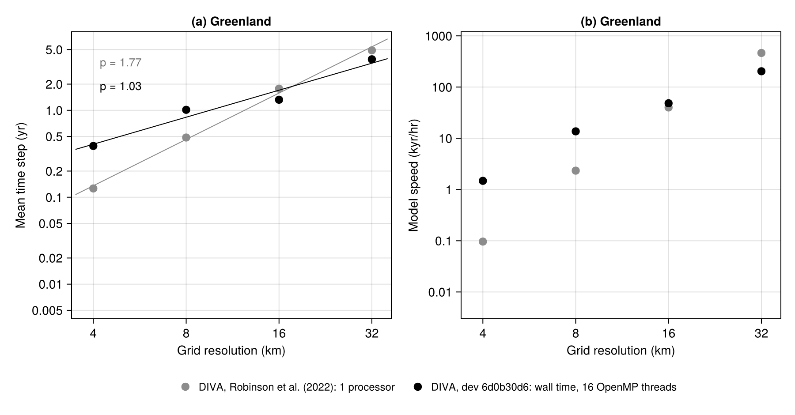
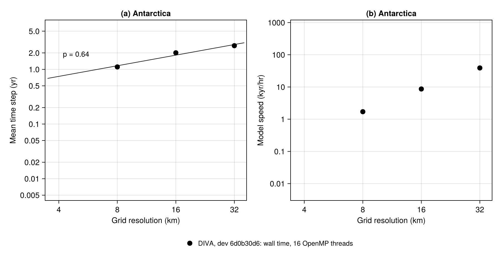

Benchmarks
Yelmo ships with a suite of standard ice-sheet benchmark experiments used for verification and regression testing. They span analytic and idealized cases (EISMINT, slab, trough) as well as community intercomparison protocols (MISMIP3D, initMIP). Each benchmark has a dedicated test program under tests/ and a parameter file under par/.
General workflow
Build the test program:
make <target>.Run it via
runme, choosing the executable alias, namelist, and output directory:runme -r -e <alias> -n <namelist> -o <output-dir>Override namelist values inline as needed with
-p group.key=value.
For ensemble runs (one execution per parameter combination), pass comma-separated values to -p. runme interprets these as ensemble dimensions and creates one run directory per combination under -o:
runme -r -e <alias> -n <namelist> -o <ens-dir> -p key=val1,val2,val3This is built into runme — no separate package or jobrun wrapper is needed.
The sections below cover each benchmark in the current Yelmo test suite, and the single-column tests of the thermodynamics at the end. For additional variants (alternative solvers, basal-friction sweeps, OpenMP scaling tests, and benchmarks not yet documented here such as HALFAR, ISMIP-HOM A and C, MISMIP+, and CalvingMIP), see run_batch_gmd.sh in the repository root.
EISMINT1-moving
EISMINT Phase 1 moving-margin experiment (Huybrechts and Payne, 1996). Idealized circular dome on a flat bed with a prescribed surface mass-balance field that drives transient margin advance and retreat toward a quasi steady state. Exercises the SIA flow law, mass conservation, and basic margin handling.
make clean
make benchmarks
runme -r -e benchmarks -n par/yelmo_EISMINT_moving.nml -o output/benchmarks/eismint-movingEISMINT2-expa
EISMINT Phase 2 Experiment A (Payne et al., 2000). Steady-state thermomechanical experiment with a fixed margin on a flat bed, designed to test the coupling between ice dynamics and internal thermodynamics — in particular the formation of cold-ice cores and basal-temperate regions.
make clean
make benchmarks
runme -r -e benchmarks -n par/yelmo_EISMINT_expa.nml -o output/benchmarks/eismint-expaMISMIP3D
Marine Ice Sheet Model Intercomparison Project, 3D version (Pattyn et al., 2013). Tests grounding-line dynamics on a marine bed, with the SSA momentum balance (ydyn.solver = "ssa" in the parameter file). Two experiments are defined in the namelist via the ctrl.experiment field: Stnd (standard: advance to steady state, the P75S basal-friction perturbation from 15.0 to 15.1 ka, and recovery until 16.1 ka) and RF (reverse forcing, to test reversibility, until 85 ka). With ctrl.time_end ≤ 0 (default), the run ends at the end of the protocol.
Standard experiment:
make clean
make mismip
runme -r -e mismip -n par/yelmo_MISMIP3D.nml -o output/benchmarks/mismip3d-stnd -p ctrl.experiment=StndReverse-forcing experiment:
runme -r -e mismip -n par/yelmo_MISMIP3D.nml -o output/benchmarks/mismip3d-rf -p ctrl.experiment=RFResolution ensembles
To probe grid resolution and the treatment of the grounding line, run ensembles over ctrl.dx with different basal-stress scaling / staggering options at the grounding line:
# Simple staggering of beta (beta_gl_stag=0)
runme -r -e mismip -n par/yelmo_MISMIP3D.nml -o output/benchmarks/mismip3d-default \
-p ydyn.beta_gl_scale=0 ydyn.beta_gl_stag=0 ctrl.dx=2.5,5.0,10.0,20.0
# Subgrid grounding-line interpolation (beta_gl_stag=3)
runme -r -e mismip -n par/yelmo_MISMIP3D.nml -o output/benchmarks/mismip3d-subgrid \
-p ydyn.beta_gl_scale=0 ydyn.beta_gl_stag=3 ctrl.dx=2.5,5.0,10.0,20.0
# Subgrid + basal-stress scaling (beta_gl_scale=2)
runme -r -e mismip -n par/yelmo_MISMIP3D.nml -o output/benchmarks/mismip3d-scaling \
-p ydyn.beta_gl_scale=2 ydyn.beta_gl_stag=3 ctrl.dx=2.5,5.0,10.0,20.0ISMIP-HOM Experiment F
Prognostic experiment of ISMIP-HOM (Pattyn et al., 2008, Sect. 3.6): a slab of mean thickness 1000 m on a 3° slope flows over a Gaussian bed bump (amplitude 100 m, width 10 km) in a periodic 100 km domain, with zero surface mass balance, until the free surface reaches steady state. The rheology is linear (n = 1, A = 2.140373e-7 Pa⁻¹ a⁻¹), so the unperturbed surface speed is 100 m/a. EXPF1 has no slip (slip ratio c = 0), EXPF2 has c = 1 (β = 1/(A H₀)). The driver tests/yelmo_ismiphom.f90 sets the domain, n, A, β and the driving-stress cap; steady state is reached after about 1000 years.
make ismiphom
runme -r -e ismiphom -n par/yelmo_ISMIPHOM.nml -o output/benchmarks/ismiphom-f1 \
-p ctrl.experiment=EXPF1 ctrl.time_end=2000 ctrl.dtt=10 ctrl.dt2D_out=100
runme -r -e ismiphom -n par/yelmo_ISMIPHOM.nml -o output/benchmarks/ismiphom-f2 \
-p ctrl.experiment=EXPF2 ctrl.time_end=2000 ctrl.dtt=10 ctrl.dt2D_out=100tests/ismiphom_f.jl compares the steady state along the central flowline (y = 0) with the seven models of the intercomparison (reference data in tests/data/ISMIPHOM-F; cma1 and oga1 are full Stokes), prints the extremes and the rms differences, and plots the profiles:
julia tests/ismiphom_f.jl ismiphom-f.png \
F1:DIVA=output/benchmarks/ismiphom-f1 F2:DIVA=output/benchmarks/ismiphom-f2
Yelmo (DIVA or hybrid) stays within the spread of the published models and follows the full-Stokes solutions: the rms difference to cma1 is 0.4–0.6 m in surface elevation and 0.2–0.5 m/a in surface speed (F1: hump 40.7 m vs 41.8 m; F2: 35.9 m vs 35.9 m).
slab
1D ice-slab benchmark on a tilted bed (Schoof, 2006), used to test SSA / DIVA solver behaviour, basal-friction parameterizations, and numerical convergence on a configuration with an analytic reference. The domain is dispatched inside the yelmo_trough program based on the ctrl.domain field of the namelist (SLAB-S06), so the trough build target and executable alias are used here.
make clean
make trough
runme -r -e trough -n par/yelmo_SLAB-S06.nml -o output/benchmarks/slabtrough-f17
Idealized trough geometry (Feldmann and Levermann, 2017) designed to test buttressing and grounding-line behaviour in a confined, narrowing channel. Used to probe stability and lateral-stress representation in marine outlet glaciers.
make clean
make trough
runme -r -e trough -n par/yelmo_TROUGH-F17.nml -o output/benchmarks/trough-f17Variants and ensembles
Alternative solver, resolution, and basal-friction settings used to probe sensitivity:
# SSA solver instead of the default
runme -r -e trough -n par/yelmo_TROUGH-F17.nml -o output/benchmarks/trough-f17-ssa -p ydyn.solver=ssa
# Higher resolution (1 km and 2 km)
runme -r -e trough -n par/yelmo_TROUGH-F17.nml -o output/benchmarks/trough-f17-dx1 -p ctrl.dx=1.0
runme -r -e trough -n par/yelmo_TROUGH-F17.nml -o output/benchmarks/trough-f17-dx2 -p ctrl.dx=2.0
# cf_ref ensemble (3 values) with adjusted beta_u0
runme -r -e trough -n par/yelmo_TROUGH-F17.nml -o output/benchmarks/trough-f17-cf \
-p ydyn.beta_u0=100 ytill.cf_ref=5.0,10.0,20.0The TROUGH-F17 parameter file uses a pseudo-plastic law (ydyn.beta_method = 2) with ytill.is_angle = True, so cf_ref is a till friction angle in degrees. Its beta_u0 is very large (one year in seconds), so beta_u0 = 100 above changes the friction law substantially.
initmip-grl
Greenland initialization benchmark following the initMIP-Greenland protocol (Goelzer et al., 2018). Spins the ice sheet up toward a present-day steady state using the optimization-based initialization scheme (ctrl.equil_method = "opt", see Basal friction optimization) with present-day boundary conditions. Default settings: 10-yr outer timestep, 1000-yr simulation, steady-state forcing.
Greenland is supported at 32, 16, 8, and 4 km resolution. Select the grid by uncommenting the desired line:
grid=GRL-32KM
#grid=GRL-16KM
#grid=GRL-8KM
#grid=GRL-4KM
make clean
make initmip
runme -r -e initmip -n par/yelmo_initmip.nml -o output/initmip-grl-$grid \
-p ctrl.set_nm=set_grl_pd yelmo.log_timestep=True \
yelmo.domain=Greenland yelmo.grid_name=$gridTo run all four resolutions as an ensemble:
runme -r -e initmip -n par/yelmo_initmip.nml -o output/initmip-grl-ens \
-p ctrl.set_nm=set_grl_pd yelmo.log_timestep=True \
yelmo.domain=Greenland \
yelmo.grid_name=GRL-32KM,GRL-16KM,GRL-8KM,GRL-4KMPerformance

The runs use par/yelmo_initmip.nml with ctrl.time_end=1000. The mean time step is the simulated time divided by the number of time steps, and the model speed is the simulated time per hour of wall time of the main loop. The time step is set by the predictor-corrector controller (yelmo.pc_eps = 0.02) and the Courant cap (yelmo.pc_cfl_max). It scales as \Delta x^{1.0}, against \Delta x^{1.8} in Robinson et al. (2022), so the high-resolution grids gain the most. Data and plotting script: analysis/timing/.
initmip-ant
Antarctica initialization benchmark following the initMIP-Antarctica protocol (Seroussi et al., 2019). Same optimization-based spin-up as initmip-grl, but on the Antarctic domain with set_nm = "set_ant_pd".
Antarctica is currently supported at 32, 16, and 8 km resolution. The 4 km configuration is not yet available.
grid=ANT-32KM
#grid=ANT-16KM
#grid=ANT-8KM
make clean
make initmip
runme -r -e initmip -n par/yelmo_initmip.nml -o output/initmip-ant-$grid \
-p ctrl.set_nm=set_ant_pd yelmo.log_timestep=True \
yelmo.domain=Antarctica yelmo.grid_name=$gridTo run all three resolutions as an ensemble:
runme -r -e initmip -n par/yelmo_initmip.nml -o output/initmip-ant-ens \
-p ctrl.set_nm=set_ant_pd yelmo.log_timestep=True \
yelmo.domain=Antarctica \
yelmo.grid_name=ANT-32KM,ANT-16KM,ANT-8KMPerformance

Same setup as for initmip-grl. Data and plotting script: analysis/timing/.
Enthalpy column tests
The standalone column driver tests/test_enthalpy.f90 (make enthalpy) tests the thermodynamics solvers in a single ice column, with reference data in tests/data/Kleiner2015/:
| Experiment | Test |
|---|---|
cold-limit |
The enthalpy solver reduces to the temperature solver for cold ice |
kleiner-a |
Kleiner et al. (2015) Experiment A: transient basal melt and refreezing under a time-varying surface temperature, compared with the analytic steady melt rates |
kleiner-a-cap |
As kleiner-a, with the capacity basal boundary condition |
kleiner-b |
Kleiner et al. (2015) Experiment B: steady polythermal column, CTS height and basal water content compared with the analytic solution |
thin-margin |
Stability of a thin polythermal margin column, over a range of thickness and horizontal advection |
robin-column |
Basal temperature of a steady column compared with the Robin (1955) solution, for both solvers |
make enthalpy
./libyelmo/bin/test_enthalpy.x kleiner-b enth 201 1e-4The arguments are the experiment, the solver, the number of vertical points (default 51) and optionally the conductivity ratio of temperate ice (enth_cr). The solver (temp or enth, default enth) applies to kleiner-a and kleiner-b; the other experiments ignore it (cold-limit, thin-margin and robin-column run both solvers, kleiner-a-cap the enthalpy solver). Output is written to output/test_enthalpy_<experiment>_<solver>.nc (not for thin-margin and robin-column, which only print their results), and the program reports whether the comparison with the reference passes.